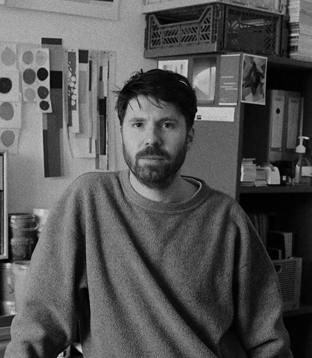
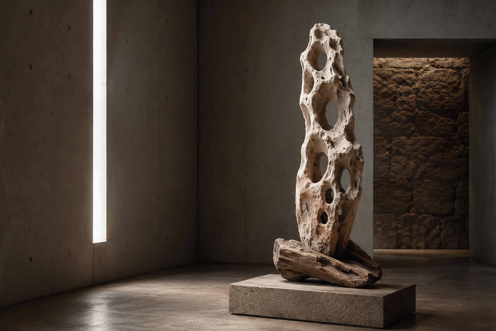
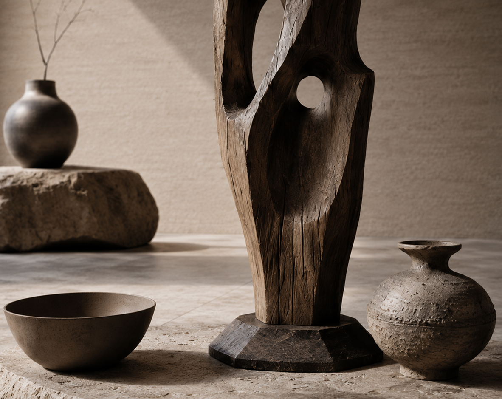

Художник, работающий с природными материалами. Практика сосредоточена на взаимодействии архитектурных форм с естественной средой и процессами времени.
В своих работах использует дерево, камень, глину и необработанные органические материалы. Создаёт объекты, которые постепенно меняются под воздействием окружающей среды, фиксируя процессы разрушения и трансформации.
Память материи (2025 г.)
Этот арт-объект построен на диалоге двух природных материалов — камня и дерева. Пустоты внутри объекта становятся не просто декоративным элементом, а способом показать хрупкость и проницаемость материи.

Работа говорит о следах времени, разрушении и сохранении. В ней соединяются тяжесть камня, органичность дерева и тишина пространства, превращая скульптуру в образ древнего природного артефакта.
След прикосновения (2026 г.)
Этот арт-объект исследует связь между природной формой, временем и ручным вмешательством человека. Центральная деревянная скульптура напоминает фрагмент ствола, в котором пустоты становятся не отсутствием, а частью формы — пространством для света, тени и воздуха.


Объект говорит о естественной красоте несовершенства: трещинах, неровностях, следах времени и прикосновения. Здесь материал не скрывается, а становится главным героем — живым, хрупким и одновременно устойчивым.